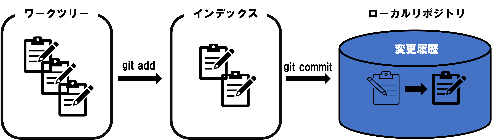
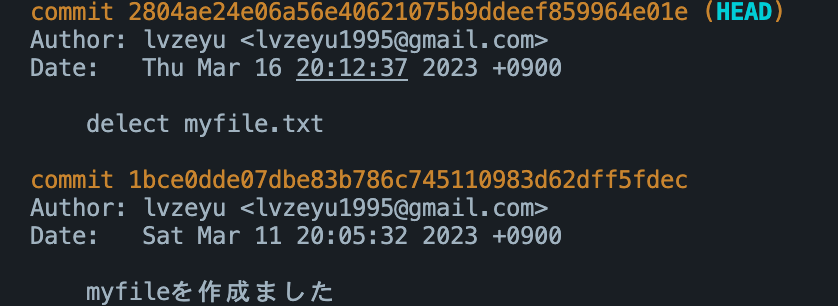

GitとGitHub
Contents
GitとGitHub#
紹介#
Gitは「パージョン管理システム(Version Control System)」と呼ばれるものの一つです。
パージョン管理システムは、バージョン管理とは、一つのファイルやファイルの集合に対して時間とともに加えられていく変更を記録するシステムで、後で特定バージョンを呼び出すことができるようにするためのものです。
ファイルの「パージョン(変更履歴)」を記録して、いつでも過去の状況に戻したり、過去の変更履歴を比較したり、どのタイミングで問題が起こっているかといった様々なことができるようになって、プログラム開発やファイル管理を補助するシステムです。
パージョン管理システムはたくさんの種類がありますが、現在最も利用されているのはGitです。さらに、GitHubなどのリモートリポジトリと組み合わせることで、クラウドでデータを管理したり、プロジェクトを共同開発するとき強力なツールとなります。
インストール#
Git#
Gitインストール#
公式サイトからGitをインストールする。
GitHubの初期設定#
GitHubアカウントを作成します。
ターミナルを開きます。
次の git コマンドでユーザー情報を設定する。
git config --global user.name "First-name Family-name"
git config --global user.email "username@example.com"
次の git コマンドでSSHキーを生成する。
cd ~/.ssh
ssh-keygen -t rsa
任意のパスフレーズを入力してEnter（2回）。パスフレーズが不要であれば空欄のままEnterでよい。
SSH Keyを格納するディレクトリに移動します。
lsでファイルを確認します。id_rsa.pubというファイルがあるはずです。cat id_rsa.pubでSSHキーを開く、ssh-rsa XXXを全てコピーします。Githubのページの右上で、プロフィール画像をクリックし、続いてSettings→Access→New SSH key→Add SSH keyをクリックしてください。
キーを
Keyフィールドに貼り付けます。Add SSH keyをクリックしてください。ターミナルで
ssh -T git@github.comを実行します。もしGitHubと連携できましたら、以下の内容が表示されます。
Hi USERNAME! You've successfully authenticated, but GitHub does not provide shell access.
VSCodeのインストール#
公式サイトからVSCodeをインストールする。
Note
VSCodeは強力なコードエディターであり、様々なプログラミング言語に機能を提供する幅広い拡張機能を備えた軽量の汎用統合開発環境 (IDE) です。VSCodeでより簡単的に・効率的にGitを操作できます。また、VSCodeでは便利な機能が豊富に搭載されているPython拡張機能もたくさんあります。
Gitの基本操作#
Git プロジェクトを取得するには、大きく二通りの方法があります。
既存のプロジェクトやディレクトリを Git にインポートする方法。
既存の Git リポジトリを別のサーバーからクローンする方法です。
まず、既存のプロジェクトやディレクトリを Git にインポートし、ファイルをコミットと履歴の管理を説明します。
既存のディレクトリでのリポジトリの初期化#
ディレクトリを作ろう
mkdir test→cd testリポジトリの初期化
git init
「ファイル」→「フォルダーを開く』→ ディレクトリを選択。VSCode左側の『エクスプローラー』に、開いたフォルダ名が表示されます。
サイドバーの「ソース管理」(Source Control)を表示して，「リポジトリの初期化」(Initialize Rspository)をクリックします。

コミット(commit)#
リポジトリを作成すると、そこに対するファイルの変更履歴を登録することができます。その操作をコミット(commit)といいます。
コミットを実行すると、リポジトリの内では、前回コミットした時の状態から現在の状態までの差分を記録したリビジョンと呼ばれるものが作成されます。

Gitの管理下に置かれた、みなさんが実際に作業をしているディレクトリのことをワークツリーと呼びます。
Gitではリポジトリとワークツリーの間にはインデックスというものが存在しています。インデックスとは、リポジトリにコミットする準備をするための場所のことです。
コミットでファイルの状態を記録するためには、まずインデックスにファイルを登録し、そして変更をコミットするプロセスになります。
ディレクトリで任意のファイルを作る。例えば、
echo This is some text > myfile.txtgit statusでステータスを確認すると、myfile.txtはUntracked fileであり、つまり、また追跡対象になっていないです。git add myfile.txtでmyfile.txtを追跡対象に追加し、再びgit statusでステータスを確認すると、Changes to be committed、すなわち、コミット待ちと表示されています。コミットをするには
git commitというコマンドを使います。コミットをする際、コミットの内容を説明するメッセージを記入する必要があります。-mというオプションを付加して、その後メッセージを入れましょう。例えば、git commit -m "myfileを作成ました"
ファイルを作成すると、VSCodeが自動的に変更を検出し、ソース管理サイドバーで数字が表示されます。

ソース管理に更新ファイルの一覧が表示されます。
+アイコンでステージング操作を行います(git addと相当する)。ステージングした状態からコミットメッセージを入力して、
コミット(Commit)アイコンでコミットが完了します。
コミットリセット(reset)#
どんな作業であっても、何かをやり直したくなることはあります。 ここでは、行った変更を取り消すための基本的なツールについて説明します。
仮に、myfile.txtを削除し、delect myfileでコミットした操作を行いましたが、実はこのファイルは捨ててはいけないファイルだったと気ついたとします。
Gitで間違えた変更を元に戻していきましょう。
git logでコミットの情報を確認します。コミットを特定するためには、2804ae24e06a56e40621075b9ddeef859964e01eのような形のハッシュを使います。 オレンジ色の部分はコミットIDの情報になります。 特定のコミットまで戻す場合、
git reset 1bce0dde07dbe83b786c745110983d62dff5fdecという形でコミットIDを指定できます。
Git Graphという拡張機能をインストールします。
サイドバーの「Source Control」→「View Commit Graph」をクリックすると、ログを確認できます。
戻すそうのコミットを見つけて、マウスの右クリックし、表示されるメニュで「
Reset Current Branch to Commit」→ 「Reset」を選ぶと、指定したコミットに戻ります。
Note
リセットはオプションを指定できます。
--soft「変更」→「ステージング」→「コミット」の作業のうち、最後の「コミット」だけをリセットする方法です。ファイルがステージングされた状態まで戻されます。--mixed「ステージング」までをリセットする方法です(default オプション)。インデックスが空の状態に戻すので、ここでステージングを一からやり直してコミットできます。--hard「変更」から全て破棄する方法です。この方法の場合、ファイルの変更などを含めて破棄されます。
Advanced
git checkoutでも元の状態に戻すことができます。ただ、この操作はワークツリーまで変更するので、場合によるcheckoutは作業ディレクトリを破壊する(上書きなど)可能性もありますので、十分に注意してください。一方、git resetは--hardオプションではないなら、作業ディレクトリにファイルに直接に変更は加えられていません。
ブランチ(branch)#
ブランチとは、開発の本流から分岐し、それぞれ状態ごとに作業を進める機能のことです。
ブランチ機能を使うことで、複数の状態を同時に保つことができます。個人作業での試行錯誤もグールプの共同作業も非常に役を立っています。

新しいブランチを作ってみましょう。例えば、
developという名前のブランチを作るなら、git branch developを実行します。特定のコミットからブランチを作る際、
git checkoutコマンドを使います。例えば、コミットID3be9fa7からrenewalという名前のブランチを作るなら、git checkout 1bce0dd -b renewalを実行します。
git branchで現在作られるブランチの一覧を確認できます。git checkoutで切り替えます。例えば、developに切り替えるなら、git checkout developを実行します。
画面の左下のブランチ名（master）が表示されている個所をクリックし、新しいブランチを作成を実行します。手順で作成するブランチ名を入力してブランチを作成します。
Git Graphを開けて、分岐を作成したいコミットで右クリックし、表示される表示されるメニュで
Create Branchを選ぶ、手順で作成するブランチ名を入力してブランチを作成します。
ブランチを分けて作業を進めると、各ブランチでの内容がバラバラになります。そんな時に、各ブランチでの変更をまとめる機能は「マージ」です。
仮に、develop branchでmyfile4.txtを追加する作業を行います。
git checkout develop
echo some text >> myfile4.txt
git add myfile4.txt
git commit -a -m "add myfile4.txt"
masterブランチに切り替えます。masterブランチでmyfile5.txtを作成し、コミットします。